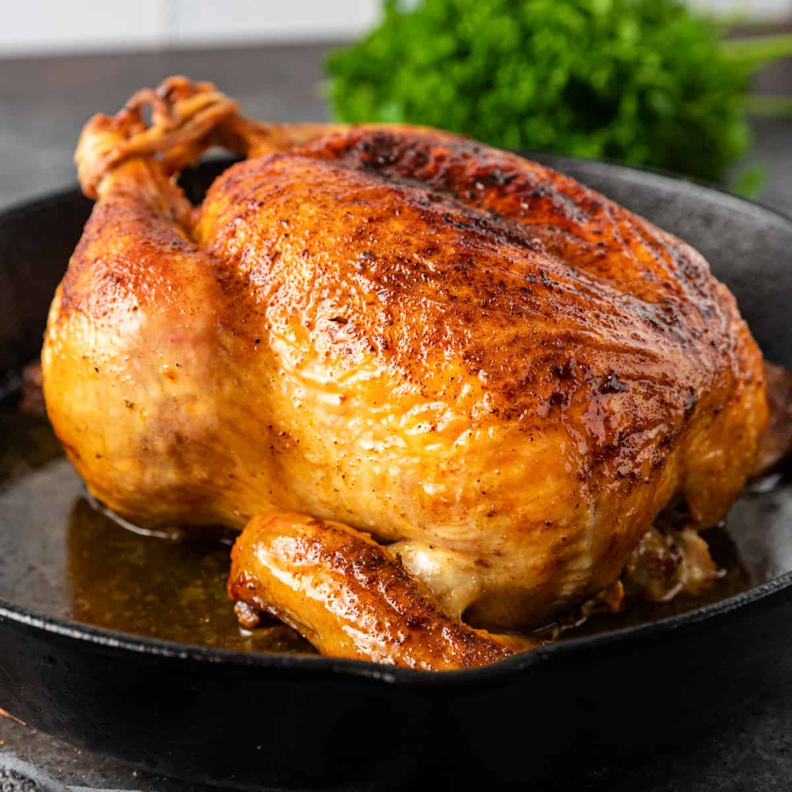

Juicy Roasted Chicken

Description
Roasted chicken never fails to impress, but it's surprisingly simple to make. This recipe turns out juicy meat and crispy skin
every time, with just a few basic ingredients and steps. It’s perfect for Sundays, family dinners, or anytime you want a comforting,
no-fuss meal, whether you're new to cooking or have been doing it for years.
Allow leftover roast chicken to cool completely before storing in an airtight container in the refrigerator for up to 3 to 4 days.
Reheat thoroughly in the oven at 325 degrees F (165 degrees C) or in the microwave until heated through. For best results, add a
splash of broth or water before reheating to help retain moisture.
Ingredients
- 1 (3 pound) whole chicken, giblets removed
- salt and black pepper to taste
- 1 tablespoon onion powder, or to taste
- ½ cup butter
- 1 stalk celery, leaves removed
Steps
- Gather all ingredients. Preheat the oven to 350 degrees F (175 degrees C).
- Place chicken in a roasting pan; season generously inside and out with onion powder, salt, and pepper. Place 3 tablespoons of butter
in chicken cavity; arrange dollops of remaining butter on the outside of chicken.
- Cut celery into 3 or 4 pieces; place in the chicken cavity.
- Bake chicken uncovered in the preheated oven until no longer pink at the bone and the juices run clear, about 1 hour and 15
minutes. An instant-read thermometer inserted into the thickest part of the thigh, near the bone, should read 165 degrees F
(74 degrees C).
- Remove from the oven and baste with drippings. Cover with aluminum foil and allow to rest for about 30 minutes before serving.
Home